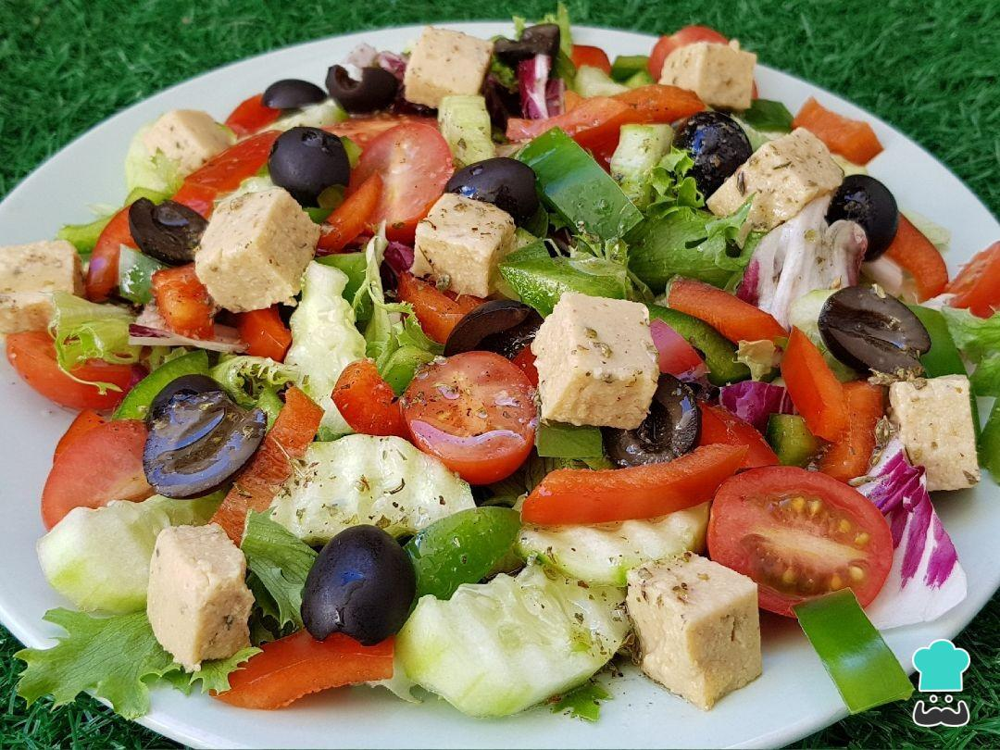

Volver a la pagina principal
Ensalada griega

Ingredientes
- 2 pepinos pequeños cortados en espirales
- 1/2 pimiento rojo cortado en tiras
- 1/2 pimiento verde cortado en tiras
- 15 tomates cherry partidos en mitades
- 1/2 cebolla morada cortada en juliana
- 10-12 aceitunas negras partidas por la mitad
- 50 g de queso feta en cubos
Vinagreta de Albahaca
- 4 cdas de aceite de oliva virgen extra
- 1 cucharada de vinagre
- 1 cucharada de albahaca fresca picada
Paso a paso
- En un vaso mezcla el aceite, el vinagre y la albahaca para la vinagreta. Reserva.
- Para hacer las espirales de pepino, introdúcelo en el espiralizador y simplemente vete dándole vueltas mientras van saliendo las espirales. Resérvalas.
- Mezcla en un bol grande todos los ingredientes de la ensalada: las espirales de pepino, los pimientos, los tomates, la cebolla, las aceitunas y el queso Feta.
- Sirve en una ensaladera o fuente y añade unas hojitas de albahaca por encima. Aliña con la vinagreta de albahaca y listo.